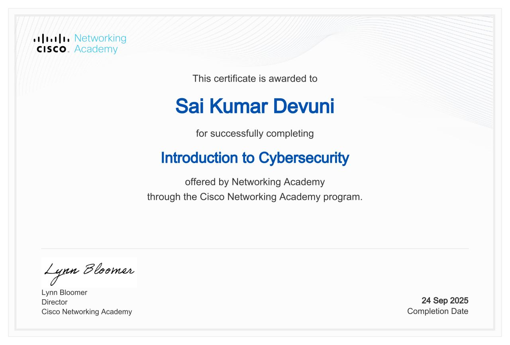

01
Cloud & Identity
AWS IAM, VPC, EC2 and S3 fundamentals; Azure identity fundamentals; cloud security concepts.
Cybersecurity professional with experience across security assessment and IT infrastructure operations. Focused on cybersecurity as my core discipline, with a career direction toward Cloud Security Engineering and Cloud Security Architecture.
Read a structured beginner-to-intermediate cybersecurity and cloud security curriculum, with free lessons, labs and trusted learning links.
Explore the free learning path ↓Learn to recognise phishing, fake links, social engineering, scams, account theft, malware and cloud security risks.
Open the cyber-awareness guide ↓Review my professional experience, certifications, projects and downloadable PDF resume.
View resume ↓I bring together cybersecurity learning and hands-on IT operations experience, with a clear focus on developing deeper cloud security capabilities.
I hold an MSc in Cloud & Cyber Security and the Certified Ethical Hacker (CEH) credential. My experience includes cybersecurity work at Spinnaker Analytics and IT infrastructure support at Cycops Business Solutions. In my current role, I support client-site IT operations, maintain network infrastructure, administer Sophos Firewall, troubleshoot systems and connectivity, and help keep services running reliably.
I am actively building my skills in cloud security, identity and access management, security monitoring, and infrastructure protection. I value practical problem-solving, clear documentation, and continuous learning.
A snapshot of technologies and domains I have studied or worked with. Practical depth varies by tool and project.
AWS IAM, VPC, EC2 and S3 fundamentals; Azure identity fundamentals; cloud security concepts.
TCP/IP, DNS, VPN, firewalls, NAT, VLANs, network troubleshooting and Sophos Firewall administration.
Microsoft Sentinel fundamentals, Windows Event Logs, Sysmon, log analysis and incident response concepts.
Vulnerability assessment and security testing concepts using tools including Nmap, Nessus, OpenVAS and Burp Suite.
Wireshark, Metasploit, Shodan, Kali Linux, John the Ripper and VirtualBox.
Windows troubleshooting, hardware and software support, printer support, asset tracking and service-ticket handling.
My experience across cybersecurity and client-site IT infrastructure operations.
EC-Council · Passed March 2026
Scope Global Skills University · 2024–2026 · Degree awarded 2026
Rabindranath Tagore University · 2024
Coursera · Completed
Boston Institute of Analytics · 2024–2025
EC-Council University · Completed
Cisco Networking Academy
EC-Council University
Selected credentials and awards. Select any certificate image to view it in full size. These images are provided for viewing. For formal credential verification, use the issuing organisation’s official verification service where available.


Google · Coursera · Completed April 2025



EC-Council University · Course completion record


Spinnaker Analytics experience letter (two pages).
A selection of cybersecurity, network security and cloud security projects demonstrating my technical interests and applied learning.
Configured secure boot, code signing and encrypted device communication to block unauthenticated IoT execution.
Explored AES encryption, API rate-limiting and input validation to reduce injection and data-leakage risks.
Designed OTP and biometric login workflows to strengthen authentication across distributed resources.
Built a modular open-source toolkit concept for scanning, exploitation, audit logging and role-based tester permissions.
Designed VPN segmentation, firewall rules and identity-driven controls to limit lateral movement across offices.
Mapped open-source security tooling to industry standards and explored packet filtering against DoS/DDoS exposure.
Evaluated AWS infrastructure vulnerabilities and proposed IAM hardening and S3 bucket policy controls.
Boston Institute of AnalyticsAnalysed breach case studies and developed a risk-management framework aligned with NIST CSF.
EC-Council UniversityA free, beginner-friendly learning path for students, job seekers and anyone who wants to understand how to protect devices, accounts, networks and cloud environments. Learn at your own pace; no paid course is required to use this guide.
Understand confidentiality, integrity and availability (CIA), assets, threats, vulnerabilities, risk, security controls and defence in depth.
Learn how systems communicate and where common security controls fit.
Build safe habits for laptops, phones, browsers and online accounts.
Learn how defenders notice suspicious activity and respond calmly.
Understand shared responsibility and the controls used to protect cloud services.
Practice only in systems you own or have explicit permission to test.
Use this self-study syllabus in order. Each topic is a lesson checklist; study the concepts, practise only in authorised labs, and keep notes of what you learn. The guide is free to read. External platforms may have optional paid certificates or features.
These official learning portals offer free learning content or free course options. Some platforms may offer optional paid certificates, subscriptions or services; check the course terms before enrolling.
Attackers often exploit urgency, trust, fear and curiosity rather than advanced technology. Learn the warning signs, pause before acting and verify requests through a separate trusted channel.
Messages may imitate banks, delivery companies, employers or government services. Check the full sender address and destination domain. Do not open unexpected links or attachments; visit the known official website or app yourself.
SMS, WhatsApp, Telegram and social-media messages may claim a parcel is held, an account will be blocked or a payment is pending. Do not use the message link or call its supplied number; verify independently.
Scammers may pretend to be bank staff, police, technical support or a company executive. Never disclose passwords, PINs, CVVs or OTPs. End the call and contact the organisation using a trusted number.
Attackers create panic, authority, secrecy or an attractive reward to make people bypass normal checks. Be cautious of “act now”, “keep this secret” or “you will lose access” demands. Verify unusual requests with the person through another channel.
Never share an OTP or approve an unexpected sign-in prompt. Repeated MFA prompts can be an attack attempt. Deny unexpected prompts, change the password from the official site and report the activity to the service provider.
If one website is breached, reused passwords can put other accounts at risk. Use a unique password for every service, store them in a reputable password manager and enable MFA or passkeys where available.
Unexpected invoices, job offers, APK files, cracked software and macro-enabled documents may contain malware. Download software only from official sources; do not enable macros or bypass security warnings for an unexpected file.
A QR code can hide a fraudulent website or payment destination. Preview the destination before opening it, check the domain carefully and never enter credentials or payment details just because a QR code is displayed.
Lookalike domains, fake app listings and alarming pop-ups may request remote access or payment. Install apps from official stores, check the publisher and never grant remote-control access to an unsolicited caller.
Fake hotspots can imitate legitimate network names. Confirm the correct network with the venue, avoid sensitive transactions on unknown networks, use HTTPS and a trusted VPN when appropriate, and turn off auto-join for unknown Wi-Fi.
A criminal may try to transfer your phone number to another SIM to intercept calls or SMS. Protect your mobile account with a carrier PIN or port-out lock where available; contact your carrier immediately if service unexpectedly stops.
AI-generated voices or videos can imitate relatives, managers or public figures. Verify urgent money or information requests using a known number and a pre-agreed family or workplace verification phrase.
Attackers may compromise or imitate a supplier or manager and request new bank details or urgent transfers. Confirm payment changes using a previously verified contact and follow dual-approval procedures.
A found USB drive or unknown charging accessory may be unsafe. Do not plug unknown devices into work or personal systems; hand found devices to the responsible IT or security team.
Malware may encrypt files or steal data and demand payment. Keep offline or protected backups, patch systems, use endpoint protection and report suspected ransomware immediately. Do not try to investigate on a work device without IT guidance.
Public storage, excessive permissions, exposed API keys and unprotected backups can expose sensitive information. Use least privilege, private-by-default storage, MFA, secret management, encryption and audit logging.
This guide is general awareness education, not incident-response, legal or financial advice. For workplace incidents, follow your organisation’s security policy and contact its IT/security team immediately.
Download my resume in PDF format for a detailed overview of my professional experience, technical skills, education and certifications.
PDF document · Updated November 2026
Open to suitable opportunities in Cloud Security, Cybersecurity, IAM, Network Security and Security Operations.